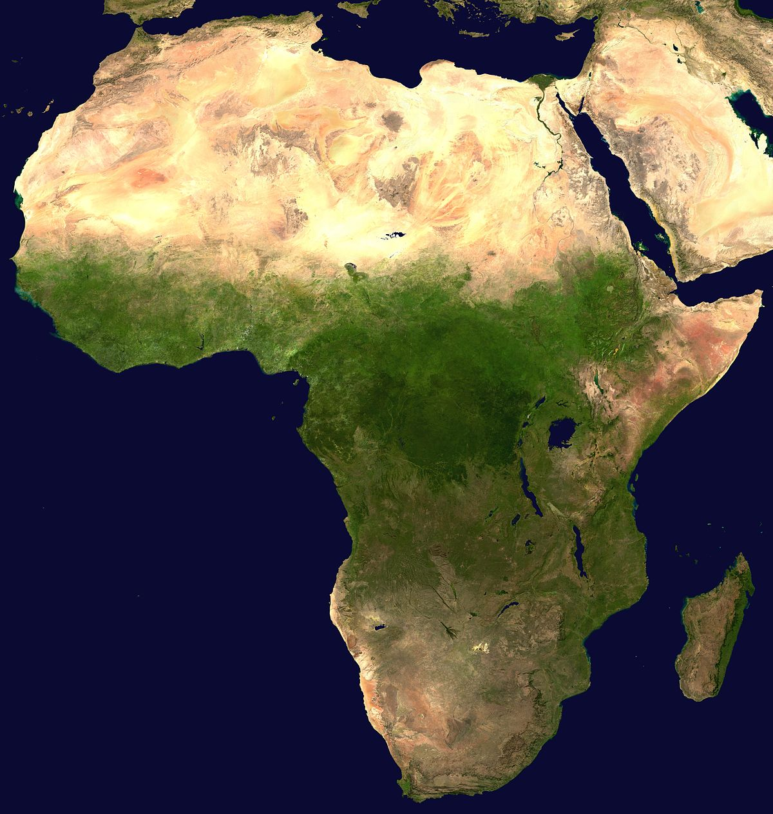
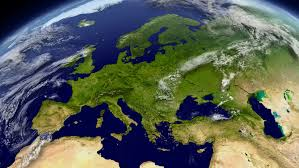
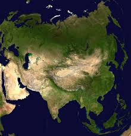

KONTYNENTY
JEST ICH NA NASZYM ŚWIECIE AŻ 7
Afryka

Drugi pod względem wielkości kontynent na Ziemi.
Zajmuje 30,37 mln km², czyli ponad 20,3% ogólnej powierzchni lądowej świata.
Przechodzą przez niego południk 0°, obydwa zwrotniki i równik.
Według danych z 2012 r. Afrykę zamieszkuje ok. 1070 mln ludzi,
co stanowi 1/7 ludności świata. Afryka ma najwyższy na świecie przyrost naturalny
(24‰ rocznie) i jest „najmłodszym” kontynentem na Ziemi – dzieci (0–14 lat) stanowią ok.
44% populacji. Afryka ma też najniższy PKB na 1 mieszkańca (895 dolarów USA),
najniższą średnią długość życia (47 lat), a także największą liczbę zakażonych wirusem
V (ok. 24,9 mln, czyli ok. 64,3% zakażonych na całym świecie).
Europa

Część świata (nazywana zwykle, jednak nieściśle, kontynentem) leżąca na półkuli północnej,
na pograniczu półkuli wschodniej i zachodniej, której część kontynentalna stanowi wraz z Azją
kontynent Eurazję.
Azja

Część świata, razem z Europą tworząca Eurazję,
największy kontynent na Ziemi. Z powodów historycznych i kulturowych sama Azja bywa również
nazywana kontynentem (zob. alternatywne listy kontynentów). Nazywana jest często kontynentem
wielkich kontrastów geograficznych.
Sąsiaduje z Europą od zachodu,
Afryką od południowego zachodu, Oceanem Indyjskim i Australią od południowego wschodu oraz Pacyfikiem
od wschodu. Dokładny przebieg zachodniej granicy geograficznej przedstawiony jest w haśle granica
Europa-Azja. Obszar Azji to 44,6 mln km² powierzchni lądów, co stanowi około 30% powierzchni
wszystkich lądów. Ma charakter wyżynno – górski (wyżyny stanowią 75% powierzchni tego kontynentu
– średnia wysokość Azji stanowi prawie 1000 m n.p.m.). Azję zamieszkuje 4436,33 mln ludzi, co daje
99,9 osób na km² (dane z 2016 roku).
Ameryka Południowa

Kontynent o powierzchni 17,8 milionów km² leżący na półkuli zachodniej oraz w większej
części na półkuli południowej, a w mniejszej – na półkuli północnej. Niekiedy uważana
jest również za subkontynent Ameryki.
Amerykę Południową oblewa od wschodu Ocean Atlantycki, a od zachodu Ocean Spokojny. Od północy,
przez Przesmyk Panamski oraz Morze Karaibskie, kontynent graniczy z Ameryką Północną. Jego
powierzchnię zajmuje 13 państw: Argentyna, Boliwia, Brazylia, Chile, Ekwador, Gujana, Kolumbia,
Paragwaj, Peru, Surinam, Urugwaj, Wenezuela, Trynidad i Tobago oraz dwa terytoria zależne: Gujana
Francuska należąca do Francji i brytyjskie Falklandy. Powierzchnia Ameryki Południowej zajmuje
17 840 000 km² i w 2010 roku zamieszkiwało ją ponad 396 mln osób co stanowiło 5,79% ludności
świata. Powierzchniowo, wśród kontynentów, Ameryka Południowa zajmuje czwarte miejsce
(za Azją, Afryką oraz Ameryką Północną). Największym miastem jest mające prawie 20 mln
mieszkańców São Paulo.
Ameryka Północna

Kontynent o powierzchni 24 200 000 km² (co stanowi 16,3% całkowitej powierzchni lądów na
kuli ziemskiej), położony na półkulach: północnej i zachodniej. Do Ameryki Północnej należy
również tzw. Ameryka Środkowa.
Antarktyda

Kontynent położony najdalej na południe Ziemi, na którym znajduje się geograficzny biegun
południowy. Kontynent jest położony w rejonie Antarktyki na półkuli południowej, niemal w
całości na południe od koła podbiegunowego i jest otoczony przez Ocean Południowy. Jedyny
kontynent, który jest stuprocentową anekumeną. Ma powierzchnię 14,0 mln km², jest piątym
co do wielkości kontynentem po Azji, Afryce, Ameryce Północnej i Ameryce Południowej, prawie
dwa razy większym od Australii. Około 98% Antarktydy pokrywa polarna czapa lodowa o średniej
grubości 1,9 km, która rozciąga się do wszystkich, prócz wysuniętych najbardziej na północ
krańców Półwyspu Antarktycznego.
Australia

Państwo demokratyczne, położone na półkuli południowej, obejmujące kontynent Australia,
wyspę Tasmanię i inne znacznie mniejsze wyspy na Oceanie Indyjskim i Spokojnym. Stolicą
kraju jest Canberra, największym miastem jest Sydney. Jest szóstym pod względem powierzchni
państwem świata i jedynym państwem na świecie obejmującym cały kontynent. Jest zamieszkiwane
przez 25 mln osób, z czego 2/3 populacji mieszka w pięciu największych australijskich
metropoliach